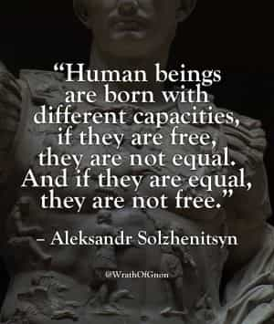
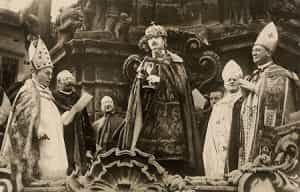

< < < Back
Why Men Cannot Be Both Free And Equal – Return Of Kings
Greetings to the men of ROK this week.
In the comments of my last article, a commenter suggested that even if religion was not exactly true, it still contained some helpful things (not my view, of course). Another man rejoined that most people were not intelligent enough to separate the good from the bad, making religion essentially undesirable in society. I responded:
Most people are not intelligent enough to manage any complex system properly.
It is why the healthiest societies have usually involved a give and take between an healthy aristocracy that created an high culture and led by example, and a populace that strove to be moral rather than “intellectual.”
The idea of “educating” and exalting “the people,” has simply destroyed high culture and exalted the vulgar tastes of vulgar persons who, over-reaching their station in life, desire to enjoy the feeling of impersonating an elite, without having the capacity to be one.
My interlocutor misunderstood me as asserting an inverse ratio between education and morality. It is to this that I wish to respond, because this is at the center of my concept of a true “Return of Kings,” and of the intended scope of my articles, before I have to cease contributing in the coming year. So, this is a “sneak peak” of the future.
I will also preface my remarks by saying that, even if my ideas on society and modern, European history are not exactly inchoate, they are not highly advanced, either. I avoid applying the label “Neoreactionary” to myself, because I do not presently have the leisure to devote as much time as I would like to Carlyle, Evola, Moldbug and other more recent thinkers; it is despicable to claim association with a philosophical school, if one cannot be bothered to read its canon and understand it. Nor, though I of course know something about the subjects, am I presently free to devote as much time as I would like to the finer points of the history of the Protestant, French, Socialist and Communist revolutions.
My duty at present is to prepare for seminary studies, so my perspective on the crisis of modernity comes primarily from a theological and philosophical perspective. A “big picture” is emerging for me of the story of Western Civilization over the past five centuries, which grows clearer every day. But it is not yet crystal clear.
To begin, then:
Virtue and (Pseudo)-Intellectualism
My statement that an healthy society’s populace strives to be “moral rather than ‘intellectual,’” was not intended to imply that there is some sort of opposition or inverse relation between the two in society. Indeed, true education is necessarily moral. The reason I put “intellectual” in quotes, was to indicate that this desideratum of modern society is not authentically intellectual at all.
The political ideologies and theories that have driven the chaos of the past centuries were always rooted in vain pretenses of pseudo-intellectualism; no person or class of persons is wise enough to manage such a chaotic element in a society; the masses, especially (including somewhat clever folk), will never understand what these theories pretend to know. The intrusion into daily life of pseudo-intellectual ideology, and of modern “politics,” is itself unnatural and constitutive of a crisis.
Voltaire – a Perfect Example of a Fool Too Clever by Half
In the past, society worked by a more natural give and take between an exemplary high culture, and the general populace attracted by that example to the emphasis upon virtue and transcendence. In practice, we see that even well-crafted, ideological theories of governance are powerless, unless the populace itself is virtuous. Similarly, many theoretical shortcomings are ameliorated by a virtuous populace. The chief aim of a society should therefore be prudently to encourage virtue and punish vice, for then the battle is more than half-won, whereas all the “rights” you could care to claim will not save you from a vicious society. If virtue is first, true liberty will follow; if anything is put before virtue—even “liberty”—then nothing will stand for long.
Moreover: virtue is within every man’s competence, and it is as beautiful in the peasant’s home as it is in the royal chapel. So an aristocratic society, where the elites cultivate the exemplary, high culture of virtue and transcendence, attracting the common man in turn to his natural and supernatural end, is a very natural character for a society to have, even though virtue is difficult.
But to truly attain a liberal education, which is the traditional and indispensable education of the aristocracy (because it is “liberal” not in the sense of being “Left,” obviously, but of being conducive to maximizing true liberty—not license—in one’s self and in society), one needs, in addition to sufficient virtue, the gifts of a keen intellect and sufficient prosperity for the means of education. These are not in the competence of most people.
Thus, not many men will become truly fit to govern a society that upholds authentic rights and freedom; to base a society on this assumption is unnatural in the extreme. The accrued wisdom of the aristocratic tradition can supply some lack, thank God. Still, to understand and to act well upon this tradition, especially beyond one’s private sphere, is not the lot of the masses.

Flawed Premises and Ends
The shift from the emphasis on virtue to an emphasis on “empowering” people with a pretense of education and “equitable” distribution of capital, is complex. To be overly brief, it can be tied to the development of the Bourgeoisie—the upper-middle class in the increasingly prosperous, Western civilization. They were prosperous enough folk to have a little too much and way too little knowledge. They came within striking distance of the nobility. Doubtless, not every nobleman was an exemplar of noble blood; many upper-middle class persons naturally felt quite superior to some of them, and resented their positions. As the Bourgeoisie grew more successful, they merely made formal what was already true, informally. In the words of Frederic Grunfeld:
“The government remained monarchic and aristocratic; the economy had passed into the hands of merchants, lawyers, manufacturers, and engineers-all legally barred from enjoying the prerogatives reserved for the nobility -a privileged elite that, together with the clergy, constituted less than one percent of the population in a nation of twenty-four million. The French Revolution, therefore, was essentially the chaotic and often violent process by which political power passed into the hands of those who already possessed economic power. In the words of one modem historian, it made “the bourgeoisie mistress of the world.” – The French Kings
The expanding wealth and knowledge of the middle class occurred during the old order of the Church and the nobility; rather than impeding education and prosperity, the Ancien Régime was too successful in fostering it! To credit revolutionaries with creating this (when in fact their chaos disrupted the process for some time), and to blame the aristocracy for impeding it, is wrong and unjust.
To justify the overthrowing of the nobility and its traditional culture of virtue and transcendence, we adapted a rhetoric and a culture of egalitarianism, assuming that all men were “equal” in the raw, and, given the opportunity (via education and prosperity), would govern themselves wisely and well. Hence two powerful engines of egalitarianism are universal education and the redistribution of wealth. As reality increasingly disproves this absurd, revolutionary thesis, the goal of equal opportunity is increasingly revised to mandate the expectation of equality of outcomes. Equality is mandatory, lest the theory be falsified!We, the intelligent and educated, know that our theories can’t be false!
A “caregiver” stays with my grandmother on the farm for a couple hours in the middle of the day; sometimes she watches Dr. Phil or Dr. Oz, and there are frequent commercials featuring bimbos who want to improve themselves by attending online college in their pajamas. And this illustrates the situation rather well; skip motherhood, ride the carousel, get an online degree in Communications and prepare for a life of depressing, hedonistic nihilism followed by crippling spinsterhood.
We have abandoned a sane society oriented towards virtue and transcendence for an insane society where the Economy is the supreme end, and the means for attaining it are “education,” vice and frequently superfluous “work.” Even women are indulged in their flimsiest pretentions towards “educated” and “independent” status. Nobody notices that these people have not been “educated” in the sense formerly understood to be indispensable for such an involvement in public affairs. The Universities no longer provide this education; they are vocational schools for people without vocations.
Just think what we’d miss out on, if this gal were not empowered to enjoy an education.
The abolition of virtue and the high standards of aristocratic hierarchy is an ongoing devastation. Temporary gains via technology (which would have continued under aristocracy) improved the material comfort of our lives; but the loss of virtue threatens worse calamities. The obsession with The Economy, to the exclusion of the more profound crisis of the West, tells the whole story. I don’t want to be mistaken for a Leftist or a Communist, simply because I use the term “bourgeoisie” and criticize the obsession with the Economy; I condemn Communism, though Capitalism and Communism are just two sides of the same coin, if in “Capitalism” you include the modern, unnatural tendency to generate or accrue capital that is not tied to real wealth (through usury, fiat currency, etc.).
To sum up: the masses are never really going to become truly educated, and so are never going to be fit for making wise judgments on sublimely difficult matters of religion, philosophy, statecraft, etc.; this is why aristocracy and tradition exists. Only a society with warped priorities, reads that as an insult against the masses.
Indeed, the society with egalitarian pretenses dooms the masses to the tragedy of pretending at qualities and achievements they can never truly attain (with all the political tension that promises)
If some of us are capable of rising to be a new aristocracy, it will be through virtue, a careful education and other, gratuitous gifts of nature’s God; if not all of us can rise to that level, virtue at least confers upon us something of immense dignity, and our greatest possible share of nobility, truly empowering us to rule ourselves and our immediate sphere of influence well. In any time, but especially ours, such a feat is aristocratic at least by participation—a veritable “Return of Kings.”

Blessed Karl of Austria, a king worthy of his crown.
Read More: Why Are People So Polarized By Politics And Morality?